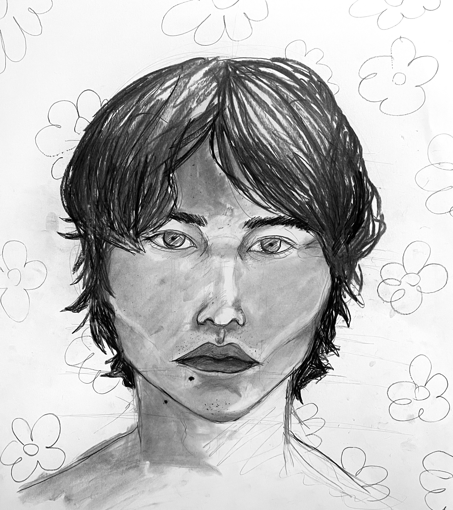

Dayton GarrettVisual ArtistGraphic DesignerDayton GarrettVisual ArtistGraphic DesignerDayton GarrettVisual ArtistGraphic DesignerDayton GarrettVisual ArtistGraphic DesignerDayton GarrettVisual ArtistGraphic Designer
Dayton GarrettVisual ArtistGraphic DesignerDayton GarrettVisual ArtistGraphic DesignerDayton GarrettVisual ArtistGraphic DesignerDayton GarrettVisual ArtistGraphic DesignerDayton GarrettVisual ArtistGraphic Designer
Dayton GarrettVisual ArtistGraphic DesignerDayton GarrettVisual ArtistGraphic DesignerDayton GarrettVisual ArtistGraphic DesignerDayton GarrettVisual ArtistGraphic DesignerDayton GarrettVisual ArtistGraphic Designer
Dayton GarrettVisual ArtistGraphic DesignerDayton GarrettVisual ArtistGraphic DesignerDayton GarrettVisual ArtistGraphic DesignerDayton GarrettVisual ArtistGraphic DesignerDayton GarrettVisual ArtistGraphic Designer
Dayton GarrettVisual ArtistGraphic DesignerDayton GarrettVisual ArtistGraphic DesignerDayton GarrettVisual ArtistGraphic DesignerDayton GarrettVisual ArtistGraphic DesignerDayton GarrettVisual ArtistGraphic Designer

WORK
graphic design

We Need Leaders

Reverberated Ambient Hallucinations

We Need Leaders #2

Fall Other People IG Post
CSU Curriculum Path
Seventh Garden Logo
artwork
Heads On Heads

Dancing Cowboys
Mumble-Jumble

Missing

Relaxed
Dancing Oni
A Natural Death
Happa Samurai
Happa Samurai 2
Video/media
Dayton GarrettVisual ArtistGraphic DesignerDayton GarrettVisual ArtistGraphic DesignerDayton GarrettVisual ArtistGraphic DesignerDayton GarrettVisual ArtistGraphic DesignerDayton GarrettVisual ArtistGraphic Designer
Dayton GarrettVisual ArtistGraphic DesignerDayton GarrettVisual ArtistGraphic DesignerDayton GarrettVisual ArtistGraphic DesignerDayton GarrettVisual ArtistGraphic DesignerDayton GarrettVisual ArtistGraphic Designer
Dayton GarrettVisual ArtistGraphic DesignerDayton GarrettVisual ArtistGraphic DesignerDayton GarrettVisual ArtistGraphic DesignerDayton GarrettVisual ArtistGraphic DesignerDayton GarrettVisual ArtistGraphic Designer
Dayton GarrettVisual ArtistGraphic DesignerDayton GarrettVisual ArtistGraphic DesignerDayton GarrettVisual ArtistGraphic DesignerDayton GarrettVisual ArtistGraphic DesignerDayton GarrettVisual ArtistGraphic Designer
Dayton GarrettVisual ArtistGraphic DesignerDayton GarrettVisual ArtistGraphic DesignerDayton GarrettVisual ArtistGraphic DesignerDayton GarrettVisual ArtistGraphic DesignerDayton GarrettVisual ArtistGraphic Designer
Dayton
About Me
A multiracial artist and designe--I like to explore and experiement with all types of mediums, but feel most comfortable with the traditional pens and markers, as well as the digital side of illustration and design. Both mediums have lead me to more exploratory and analytical ways of thinking and perceiving visually, opening up my abilities to represent an idea or a concept through aestehtic means. My art and design is largely informed by Japanese culture and tradition, the human form, and the stylistic patterns of surrealism and cartoons. In any medium I work with however, I look for the most visually-captivating way to represent an important idea or concept, that I feel could elicit any sort of emotional response. I want an emotional or physical reaction, a reflection, or even a subconcious action.
I have a lot of experience in volunteering my talents towards other creatives and organizations, however I am continuing on a path to learning more from veterans in the field to gain more professional experience.
Current Speculative Design major and Design minor undergraduate student (2025) at UC San Diego.
software skills